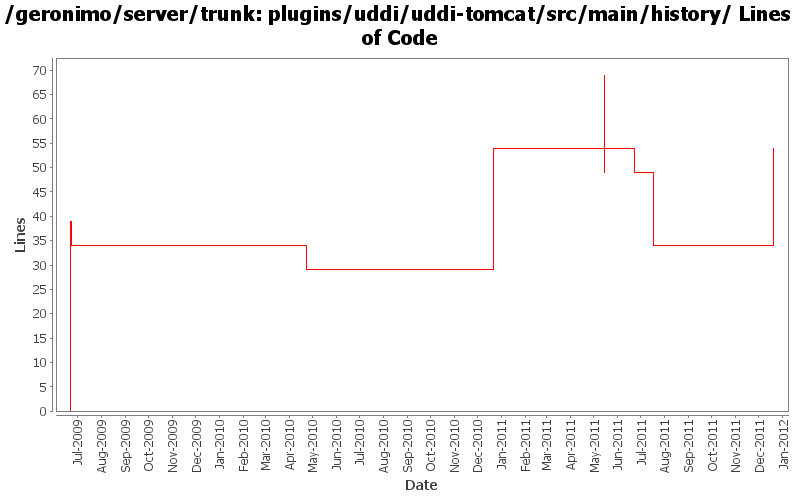

[root]/plugins/uddi/uddi-tomcat/src/main/history

| Author | Changes | Lines of Code | Lines per Change |
|---|---|---|---|
| Totals | 12 (100.0%) | 119 (100.0%) | 9.9 |
| djencks | 4 (33.3%) | 67 (56.3%) | 16.7 |
| genspring | 6 (50.0%) | 51 (42.9%) | 8.5 |
| dwoods | 1 (8.3%) | 1 (0.8%) | 1.0 |
| rwonly | 1 (8.3%) | 0 (0.0%) | 0.0 |
GERONIMO-6240 Modify configs so that they use features as the bootstrap, and fix a few compile and test errors. Servers build but do not fully start
20 lines of code changed in 1 file:
update dependencies.xml files
0 lines of code changed in 1 file:
changed dependencies.xml after a clean build.
0 lines of code changed in 1 file:
move uddi-ws dependency management to root pom because two diffrent modules depend on it.
0 lines of code changed in 1 file:
add workaround to fix uddi web service wsdl generation error.
20 lines of code changed in 1 file:
Upgrade to scout bundle 1.2.2_2-SNAPSHOT
0 lines of code changed in 1 file:
adding axis2 deployer for uddi module.
5 lines of code changed in 1 file:
GERONIMO-5005, updated juddi.sql for v3, repackage juddi war to use our own persistence.xml and libs.
26 lines of code changed in 1 file:
GERONIMO-5005 latest juddi builds but server does not start. We need to fix juddi
6 lines of code changed in 1 file:
update other XML files with embedded versions from 2.2-SNAPSHOT to 3.0-SNAPSHOT
1 lines of code changed in 1 file:
GERONIMO-4702 set up uddi database more sensibly, take out the tck data
2 lines of code changed in 1 file:
GERONIMO-4702 upgrade juddi version, simplify uddi plugin project structure. This includes minor data fiddling for the tck's benefit, which needs to be moved to the tck project. Part 1
39 lines of code changed in 1 file: